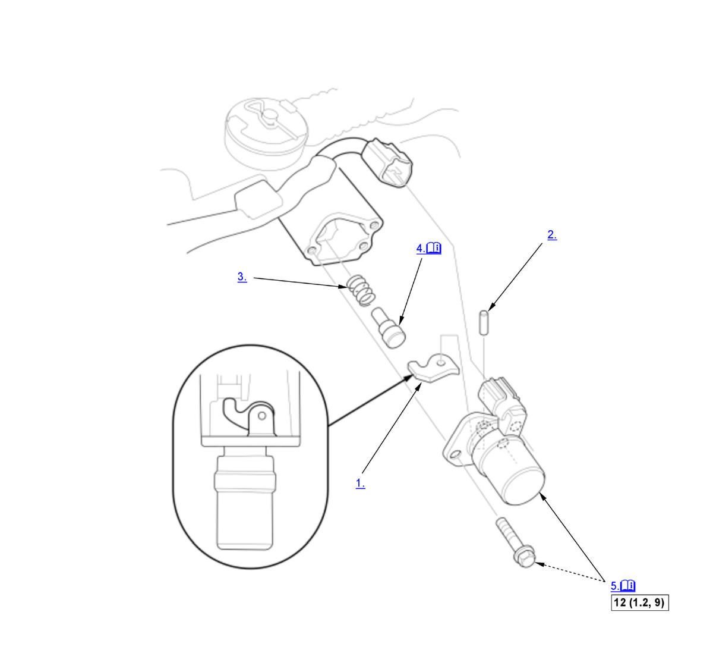

Reverse Lockout Solenoid Disassembly and Reassembly (K20C1 (M/T)) (2017 2018 2019 2020 2021): Reassembly: Procedure
WARNING: This page is about a different variant/trim than selected.
NOTE:
Numbered call-outs in figure pertain to list numbers in following procedure.
Fig 1: Exploded View Of Reverse Lockout Solenoid Components With Torque Specifications For Reassembly (K20C1 - M/T - 2017-21)

Courtesy of HONDA, U.S.A., INC. |
Detailed information, notes, and precautions |
 |
Torque: N.m (kgf.m, lbf.ft) |
- Select Lock Cam - Install
- Pin - Install
- Select Lock Pin Spring - Install
- Select Lock Pin - Install
NOTE:
- Apply MTF to the select lock pin.
- Check the operation of the select lock pin.
- Reverse Lockout Solenoid - Install
1. Clean any dirt and oil from the sealing surface of the reverse lockout solenoid and the transmission housing. 2. Apply liquid gasket (P/N 08718-0003, 08718-0004, or 08718-0009) evenly to the reverse lockout solenoid mating surface of the transmission housing. Install the component within 5 minutes of applying the liquid gasket.
NOTE: If too much time has passed after applying the liquid gasket, remove the old liquid gasket and residue, then reapply new liquid gasket.
- Transmission Mount - Install